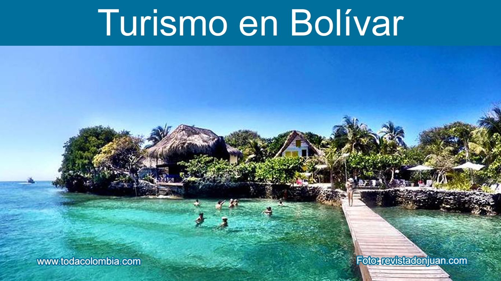

BOLÍVAR
TURISMO EN EL DEPARTAMENTO
Bolívar es un departamento con una gran riqueza histórica, cultural y natural, siendo Cartagena su mayor atractivo turístico.
ATRACCIONES TURÍSTICAS
- Ciudad Amurallada de Cartagena
- Castillo de San Felipe de Barajas
- Islas del Rosario
- Playa Blanca en Barú


COMIDA TÍPICA
La gastronomía de Bolívar incluye platos icónicos como el arroz con coco, el mote de queso y las arepas de huevo.
- Arroz con coco
- Mote de queso
- Pescado frito con patacón
- Bollo de yuca


SECTOR ECONÓMICO
Bolívar tiene una economía basada en el turismo, la industria y la agricultura.
- Cartagena es el epicentro del turismo en Colombia, con una infraestructura hotelera y cultural de primer nivel. 
- El sector industrial incluye la producción de cemento, químicos y productos manufacturados.
- Se destacan los cultivos de yuca, plátano y ñame.
TURISMO
INDUSTRIA
AGRICULTURA

Para volver a la página principal presione aquí: volver